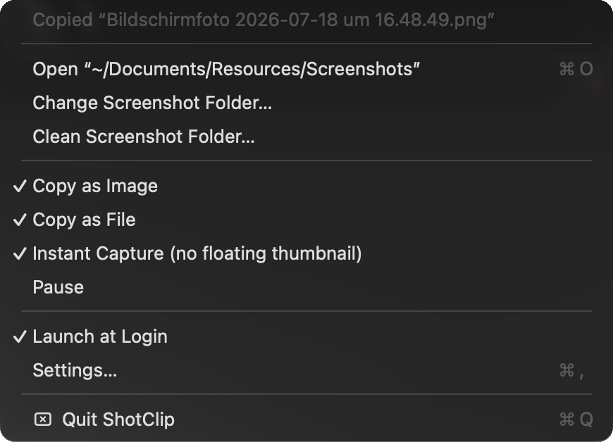
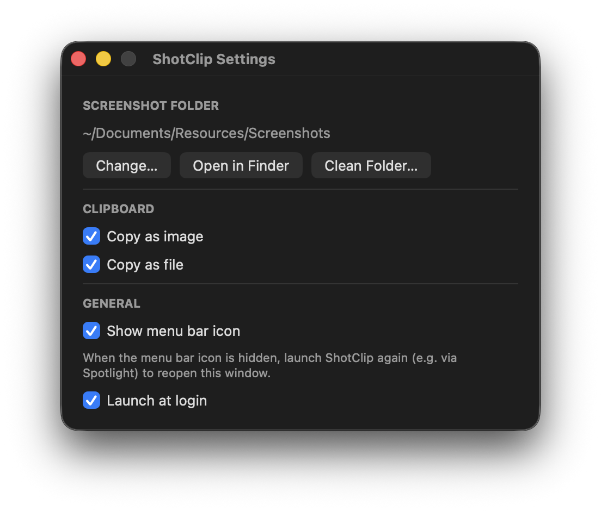

Screenshots to file and clipboard. At the same time.
macOS makes you pick — ⌘⇧4 saves a file, ⌃⌘⇧4 copies. ShotClip is a tiny menu bar app that gives you both, with the shortcuts you already use.
brew install milhero/tap/shotclip
Free & open source (MIT) · macOS 13+ · v1.1.0 · ~300 KB

Instant, not eventually
Most “auto-copy screenshot” hacks feel laggy for two reasons: Spotlight-based detection adds 1–2 seconds of indexing delay, and macOS's floating thumbnail delays the file write by another ~5 seconds. ShotClip watches the folder directly and turns the thumbnail off by default — the screenshot is pasteable the moment you release the mouse.
Pastes everywhere
ShotClip puts both the image and the file on the clipboard in a single copy. Image editors paste pixels; Finder, Slack and Mail paste the file. Both are on by default, each can be toggled off.

Small and honest
~300 KB of native Swift. No Electron, no cloud, no accounts, no screen-recording permission — macOS itself does the capturing and saving, ShotClip only watches the folder. From the menu: change the system-wide screenshot folder, pause copying, or clean the whole folder into the Trash with one click.
Install
brew install milhero/tap/shotclip
Or download the zip and drop ShotClip.app into Applications — not notarized, so open it the first time via right-click → Open. Or build from source:
git clone https://github.com/milhero/ShotClip.git cd ShotClip && make install